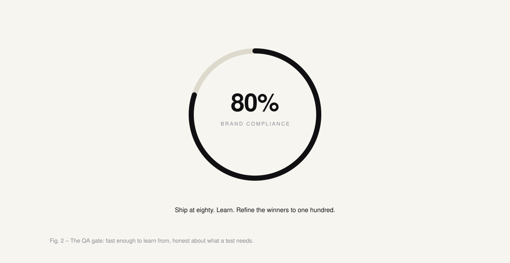

Conversion tests: from two weeks to two days
Every conversion test at Trusted Shops waited for the same thing: a developer with room in a sprint. When Figma Make shipped in May 2025, I rebuilt the workflow around AI design tools so the people with the ideas could build the tests themselves – with a designer QA gate keeping the brand safe.
- Role
- Owner · end-to-end
- Team
- Solo, conversion managers as early adopters
- Timeline
- Since May 2025
- Stack
- Figma Make · Kameleoon

–85%
Cycle time – idea to live test: two weeks → two days
No devs
Tests ship without engineering in the loop
Org-wide
Adoption – the workflow spread beyond my team
Problem
The bottleneck wasn't the thinking. It was the queue
Every conversion test moved through the same chain: someone has an idea, a designer mocks it up, a developer builds it inside a sprint, the test goes live. Four steps – and one of them set the pace for all the others. The developer step owned the calendar: not because the work was hard (most tests were small, lightweight changes), but because it had to wait for a sprint to have room.
For a team whose whole job is learning fast, that's a strange place to be.
The slowest part of a conversion test was never the design. It was waiting for someone else to build it.
Approach
Testing Figma Make on release day, with one question
I'd been watching AI design tools for a while – half-curious, half-skeptical. When Figma Make shipped in May 2025, I tested it the same day with one question: if our design system is wired in, is the output good enough for a designer or a conversion manager to visualize their own idea on our codebase – and launch a test without a developer in the loop?
The answer was close enough to yes that I rebuilt the workflow around it. Not as a faster way to make mockups – as a way to move production out of the bottleneck entirely and hand it to the people who have the ideas in the first place.
For the pilot I paired with one of our conversion managers on an idea that had been sitting on the shelf: a comparison table for the pricing page. Tables are tedious to build in HTML and CSS – the perfect test object for a developer-independent workflow.
Method
Two decisions did the heavy lifting
Templates. Rather than letting everyone generate a random version of a page per test, I built 1:1 replicas of our live pages as Figma Make templates. Each one bakes in the instructions that keep output consistent: automatic test naming, export conventions, role awareness – and a prompt that makes Figma Make export pure HTML and CSS for Kameleoon, our A/B testing tool, instead of its default React. Only I manage the templates; everyone else works inside them. That's what keeps a fast workflow from turning into a mess.
The 80% rule. In experimentation, speed of learning matters more than pixel perfection. So we ship at a minimum of 80% brand compliance after designer QA – enough that nothing embarrassing goes out – and refine the winners to 100% before they roll out for good. The 80 isn't a corner cut under pressure; it's a deliberate gate, monitored daily.

Outcome
Two days max – and a workflow that outgrew its team
Idea to live test went from up to two weeks to a maximum of two days. Tests ship without engineering, and conversion managers can visualize their own ideas and hand design a wireframe instead of a request.
The part I didn't plan for was what happened next: PMs in other departments picked up Figma Make, other designers followed, and the templates quietly became a single source of truth for how tests start.
My own role shifted with it – from executing designs to maintaining the system around them: owning the templates, holding the QA gate, deciding what ships at 80% and what earns the full pass. That's the part of the job that compounds.
Next
Where the workflow goes from here
Next
Moving the pipeline onto Claude: repo access anchors templates to the real codebase, and it writes native HTML and CSS – exactly what Kameleoon needs.
Next
Measure the pipeline: tests per quarter, time-to-live and win rate would turn the –85% from an estimate into a tracked metric.
Next
A template contribution model: today I'm the only one who builds templates – a clean bottleneck, but still a bottleneck.
Next project